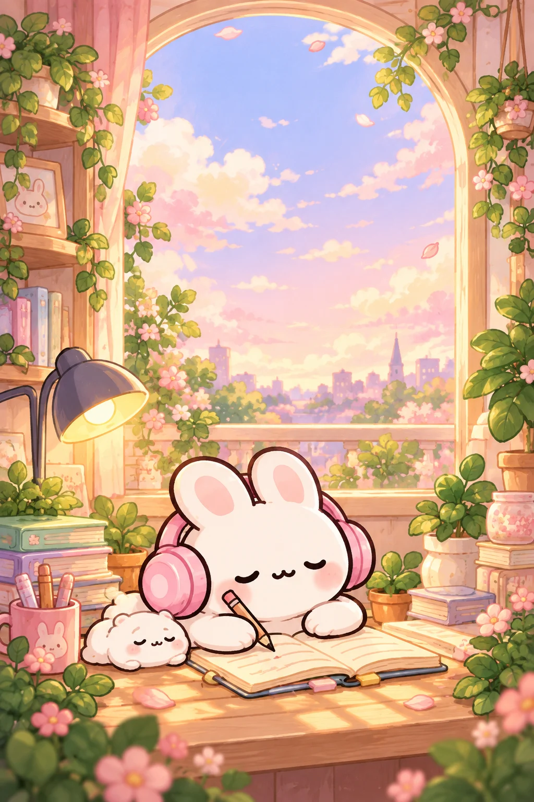

홈 대시보드
🌼
좋은 하루예요!
오늘도 조금 더 성장하는 하루가 될 거예요!

지금도잘하고 있어!
♡
▦
오늘의 할 일
집중 타이머
지금,
좋은 집중을 하고 있어요!
토끼도 함께 집중할게요. ♡
25:00집중 시간
포모도로 1/4
지금도
너무 잘하고
있어요! ♡
너무 잘하고
있어요! ♡
오늘의 집중 0분완료한 포모도로 0회
할 일 & 꾸미기
할 일 관리
꾸미기 요소
나만의 작은 공간햇살 가득한 오후의 공부방
나의 공부 기록
차곡차곡 쌓이는 나의 성장 🌱
오늘 집중한 시간0분
오늘의 포모도로0회
최근 7일의 집중
단위: 분작은 노력 하나하나를 토끼가 기억할게요. ♡